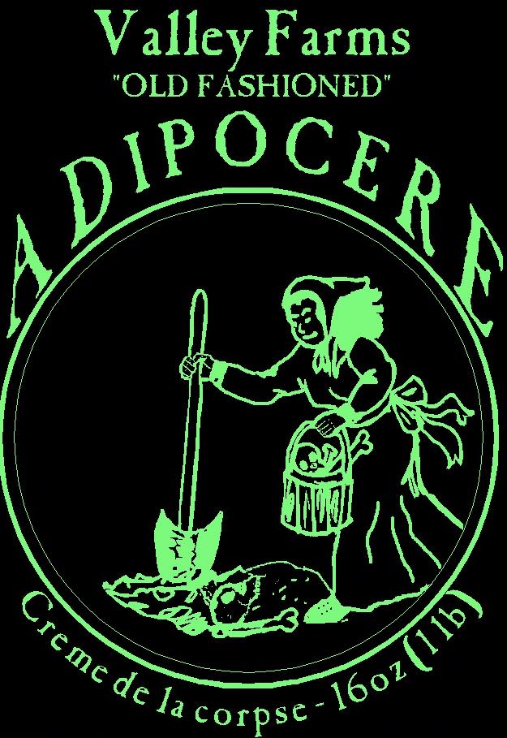

The Adipocere Industry's seminal
ambassador."
Ludwig Luftmatratze-Dir. Pathology, Ward's
Coll.
Voted one of the "Top 10 Favorite" sites by readers of Historic Foods Monthly.
"The laughter was absolute and unquenchable."
The
Bakersfeld Times
Welcome to Valley Farms Inc.
Exclusive suppliers of "Old
Fashioned" ADIPOCERE.
"The essence of our founders
is in every can!"
When our brave pioneers first faced the winters of the harsh New World, starvation reigned. Until the time when our Indian friends intervened, death was the rule in this new land--America. Then, just when all seemed lost, the ingenious pioneer Thomas Attinger (formerly a bootblack near White Chapel) discovered ADIPOCERE. Scavengers immediately stormed the boggy graveyards of their numerous former comrades, and feasting reigned. They were saved!
In this busy, computerized world
it is easy to forget the struggles of our ancestors and the good, simple
foods which sustained them. But now, we bring some of that New World taste
to your table. ADIPOCERE, food of the pioneers.
ADIPOCERE is an all natural organic product that has seen centuries of use. After its discovery by Thomas Attinger, during our nation's infancy, its popularity spread rapidly. People quickly devised varied uses, many of which have, unfortunately, been lost to history. Throughout the 17th and 18th centuries ADIPOCERE achieved almost mystical status as folklore about its origins and uses became more widespread. Songs and poems were written and lost; only fragments exist today.
Valley Farms was founded in 1810 amid a circus of suppliers producing inferior products and dangerous imitations, trying to meet the ever increasing demand of a voracious populace. Through shrewd business practices and a dedicated staff Valley Farms was able to force the inferior suppliers out of the marketplace. Demand began to decline in the late 19th century, and Valley Farms was on the verge of bankruptcy by 1911. By then many feared it was too late, but some attempts were made at increasing product diversity. In 1914 Valley Farms finally shut it doors after a failed attempt at converting production to paint stripper and clock lubricants.
With today's renewed interest in healthy, natural products, and a nation longing for simpler times, ADIPOCERE is once again on everyone's minds. To fill this need, the families of several former Valley Farms employees have reincorporated. We are producing ADIPOCERE with the traditional techniques of the past. The essence of our founders is in every can.
If you enjoy the original ADIPOCERE, then you should also try. . .
ADIPOCERE Lite--All the goodness with half the calories
ADIPOCERTS--Natural breath freshening tablets.
ADIPOCERE has cultivated a dedicated
following. Check out the testimonials of some satisfied users.
I have been a day care provider for over 20 years. About a month ago a child came in with the worst case of diaper rash I have ever seen. Her mother was in tears and the child was wailing from the pain. I had a partially used tin of ADIPOCERE™ in the refrigerator; so I applied it liberally to the rash. It's soothing effect quickly silenced the child, and the pleasing earthy aroma was a welcome change from the the harsh chemical smell of so many other medications. We now keep several tins on hand at all times. Thank you Valley Farms for a wonderful product!
Agnes Jenkins, North Carolina.
Automobile detailing is something
I take very seriously. I own a mobile detailing service, and some
of my most frequent and discriminating clients are the used car dealers
near my home. On many occasions I have been faced with a badly faded
and worn leather interior. No cleaners or leather conditioners I
have ever tried have been able to clean and restore the stained and cracked
leather in some of these cars. A good friend of mine told me about
ADIPOCERE™; so I decided to try it. The effect was absolutely amazing.
It was so easy, I just rubbed it into the upholstery with a soft
cloth then buffed it off. Now my wife and I are using it on all of
our leather goods. Great work Valley Farms!
Curtis Robertson, Minnesota.
I was in the middle catering
a very posh holiday dinner for a corporate client. While I
was preparing my trademark Quiche I realized that I was out of shortening.
Unable to complete the crust, and not having enough time to run to the
store, I was absolutely panicked. Then I remembered that my husband
always keeps a can of ADIPOCERE™ with the tool kit in the trunk of the
car. Well, without question, the Quiche turned out to be a big hit.
Thank you for saving the day Valley Farms. I really owe you one.
Pamela Hutchinson, California.
Victor.
T., Nevada
Gardening has always been one of my favorite pastimes. After retiring from 30 years in the Army I immersed myself in my gardening. One day I was exhausted after spending hours trying to clear the overgrown portions of my property. My neighbor saw me and said that I should use ADIPOCERE™. I mixed an entire tin with water and sprayed it over the whole area. Within minutes the weeds, shrubs and trees had all withered and died. Thank you Valley Farms for making my land clearing easy and painless.
Robert Schonburg, New York.
Prof. Yablo Habibi from Sri Lanka Polytech writes
My research staff has been conducting tests and collecting data for nearly 7 years. The following is a small sample of the observations we have made concerning Valley Farms Old Fashioned ADIPOCERE™;.
-As an all natural dietary supplement ADIPOCERE™ is unequaled. It contains over 20 essential vitamins and nutrients. When freeze dried and powdered ADIPOCERE can be stored indefinitely. Easily reconstituted with water, it is ideal as emergency rations for campers, hikers, and the military.
-When applied topically it has been demonstrated to relieve irritation caused by insect bites, sunburn and psoriasis.
-In its diluted form and used intravenously it shows promise as an anticoagulant and may prove to be one of medicine's most powerful weapons against heart disease.
-Extensive human testing implies that ADIPOCERE may be able to significantly reduce or reverse the effects of advanced arthritis and many forms of reproductive dysfunction.
-As a dental whitening agent ADIPOCERE is superb. After only 5 applications, participants in our tests had whiter teeth and healthier gums.
-Massaging ADIPOCERE into the scalp
has been demonstrated to induce cartoonish hair growth in nearly 75% of
balding males.
The good people of Valley Farms have outdone themselves once again. My staff and I look forward to many years of continued research that will certainly enrich lives and delight future generations. We are just beginning to reveal the myriad of uses future scientists will no doubt uncover.
Prof. Yablo Habibi. Sri Lanka Polytech.
Copyright 2004, Valley Farms Inc/Adipocere.com.
Main Page | On
Line Order Form
Credit Card Links|
Back
to Waffle Productions | Adipocere FAQ
Questions,
Contact Us.